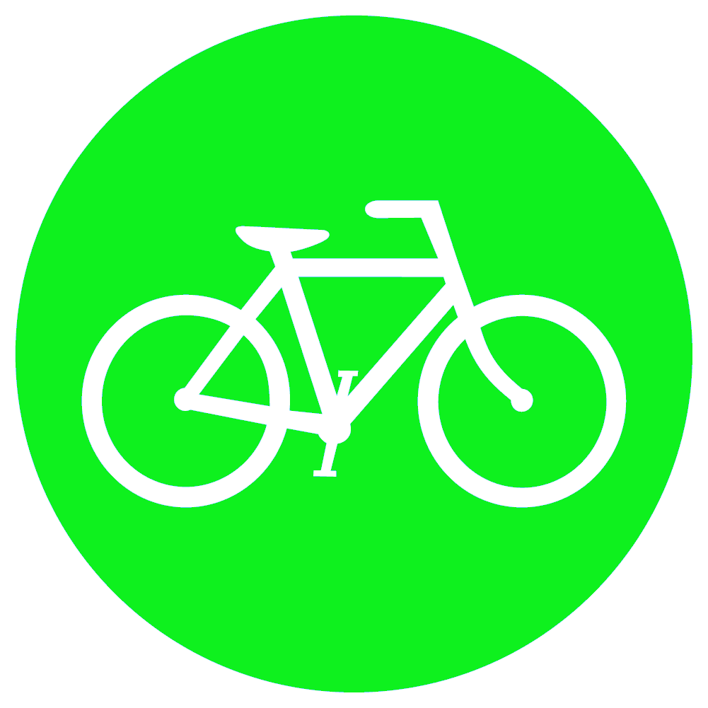
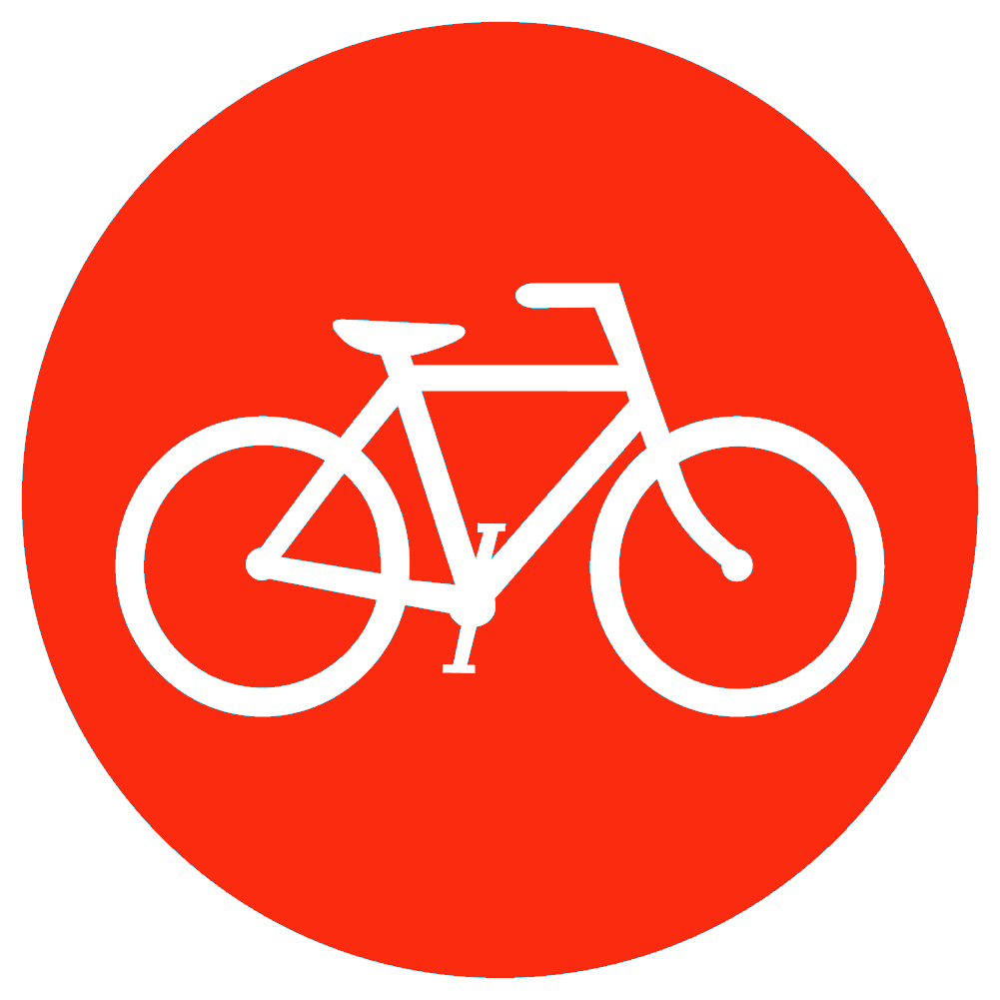

<ion-header>
  <ion-navbar>
    <ion-title>
      About
    </ion-title>
  </ion-navbar>
</ion-header>

<ion-content padding>
    <ion-list>
        <ion-item *ngFor="let bike of station.bikes">
            <ion-thumbnail item-start>
                
                
            </ion-thumbnail>
            <h2>Bike {{bike._id}}</h2>
            <p *ngIf="bike.bike!=null" >Disponível</p>
            <p *ngIf="bike.bike==null" >Indisponível</p>
            <button *ngIf="bike.bike!=null" ion-button color="secondary" round item-end>Liberar</button>
        </ion-item>
    </ion-list>
</ion-content>
